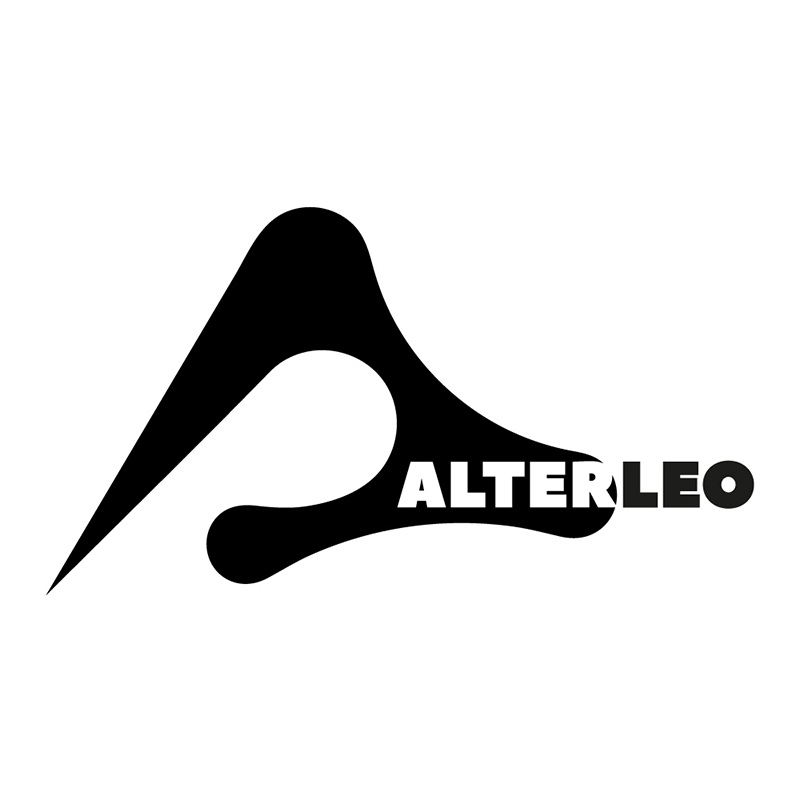

The project of Denis Leonovich — an electronic musician and DJ with 25 years behind the decks. He works where ethnic music meets electronics, drawing on the fourth world aesthetic. His records have come out on Claremont 56, Kinfolk, XXX Records, Higher Love Recordings and more. Alterleo makes atmospheric music that doesn't